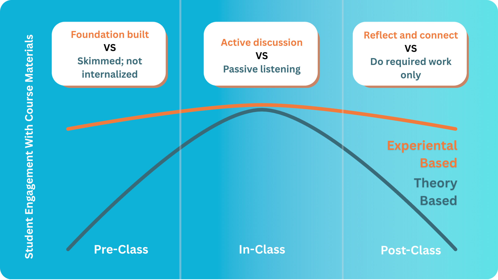

Improving Lessons#
For decades, lectures have been the backbone of education. Teachers stand at the front, deliver content, and students listen passively. But this traditional approach is struggling in today’s world because how students learn and engage has fundamentally changed.
The Limits of Traditional Teaching#
The lecture-heavy model faces three major challenges.
Student engagement is dropping: Students can access most theoretical content online, watch YouTube explanations, or use AI to get instant answers straight from there phone or laptop. This makes sitting through one-way delivery feel repetitive or unnecessary. Therefore, many students skip lectures entirely or attend while distracted by their devices.
Classrooms are more diverse than ever: In a class you’ll have students with completely different backgrounds and learning styles. Hence, a one-size-fits-all lecture can’t connect equally with everyone.
Teachers face impossible time constraints: Between grading, administrative tasks, and curriculum updates, there’s barely time for basic lesson prep, let alone creative activities or personalized content. The result is that precious class time gets consumed by theory delivery, leaving little room for discussion, collaboration, and hands-on learning.
Why Teachers Aren’t Replaceable#
While AI is incredibly powerful, it has important limitations. For example, AI can’t read the room like a teacher can. Only teachers can notice when students look confused, adjust pacing when energy drops, or pivot when a discussion takes an unexpected but valuable direction. Furthermore, using AI doesn’t always save time, especially for specific one-time use cases. Lastly, AI risks creating generic content if not used correctly. Thus, without a teachers personal touch and experience lessons can feel disconnected and boring. Instead of a replacement, think of AI like a skilled teaching assistant who prepares the first draft. The teacher then needs to provide the expertise, judgment, and human connection to turn that draft into an engaging learning experience.
The Shift from Lecture-Based to Interaction-Driven Lessons#
Although the role of a teacher will remain extremely important, AI redefines this from primarily content delivery (Theory Based) to engagement and understanding (Experiential Based). AI can better leverage pre and post-class learning periods, moving students beyond surface-level understanding. Firstly, pre-class work builds the foundational knowledge necessary for engagement. Next, in-class periods challenge assumptions and enable dynamic interaction with content. Lastly, post-class reflection consolidates discoveries and cements learning. This multi-layered approach was never feasible at scale before. However, with AI tutors now at students’ fingertips, they can engage deeply with material at their own pace, receiving personalized explanations that make this comprehensive learning cycle achievable for every student.
{kind=link}

However, this transformation relies on students actually engaging with pre-class and post-class work. Several approaches address this directly. The most straightforward is making preparation mandatory through strict pass/fail grading tied to completion of foundational work. But emerging AI technologies point toward a more sophisticated solution, such as intelligent preparation tracking systems. Such platforms could monitor student engagement with pre-class materials in real-time, giving teachers a comprehensive dashboard before each lesson. The instructor would immediately see which students have prepared, which concepts remain poorly understood across the class, and which topics require additional attention during the class time. This data-driven approach would allow teachers to dynamically adjust their in-class activities. The result would be a classroom where active learning actually works, since students arrive equipped with the knowledge base necessary to engage meaningfully with challenging material.
How the next sections can help you make these changes#
The following section provides ready-to-use prompts organized into three levels. Level 1 offers simple prompts you can try immediately. Level 2 includes multi-step prompts (which we’ll call worflows) that need more setup but create significantly more engaging lessons. Lastly, level 3 shows experimental approaches that push current the boundaries of AI in education.
Start with Level 1, then move to Level 2 and 3 as you get comfortable. Remember to use your AI book companion to help create extra prompts and workflows tailored for you.